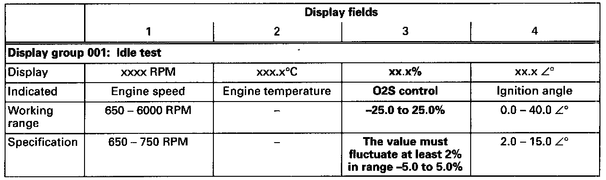

Fuel Delivery and Air Induction: Testing and Inspection
Intake Air System (outside air):Checking For Leaks:
Checking with engine leak detector spray G 001 800 A1
Special tools, testers and auxiliary items:
- VAG 1551/1552 scan tool with VAG 1551/3 adapter cable.
- Engine leak detector spray G 001 800 A1.
NOTES:
- The vacuum in the intake system will cause the leak detector spray to be drawn in with outside air. The leak detector spray reduces the ignitability of the mixture. This leads to a drop in engine speed and to a significant increase of the CO content.
- Observe safety precautions listed on the container:
Test sequence:
- Engine running at idle.
- Connect VAG 1551/1552 scan tool and select "Engine Electronics" address word 01.

Indicated on display
- Press buttons -0- and -8- to select "Read Measuring Value Block" function 08 and press -Q- button to confirm input.
Indicated on display
- Press buttons -0-, -0- and -1- to input display group 001 and press -Q- button to confirm input.

Indicated on display (1-4 = Display fields)
- Note Oxygen Sensor (O2S) control in display field 3.

- Systematically spray parts of intake system with engine leak detector spray.
If the engine speed drops or the value displayed for O2S control changes:
- Check the area of intake system which has been sprayed for leaks and eliminate leaks.